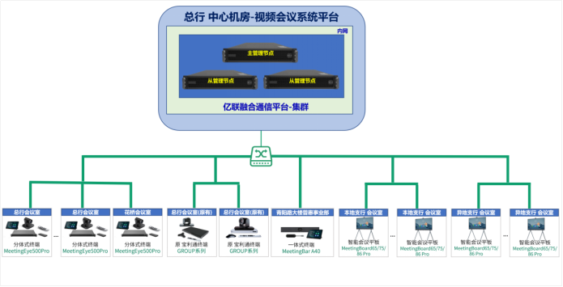

客户：昆山农商银行 | 品牌：Yealink 亿联
昆山农商银行是经中国银行业监督管理委员会批准成立的股份制商业银行。全行现有员工1500余人，下设1个总行营业部、30个本地网点、3个异地区支行以及37个分理处。随着业务加速发展，现有视频会议系统严重滞后，无法满足日益增长的远程沟通需求。
在昆山农商行总部核心机房，集群部署亿联融合通信视频会议服务器 YMS 3100，服务端架构满足冗余性，符合信创要求。平台采用「3+N」高可用部署方式：
平台兼容性方面：能够兼容现有会议终端及会议平板，实现第三方设备主辅流音视频接入转发。后期扩展支持移动端视频会议接入。
本地 26 家支行及异地 10 家支行配置一体式视频会议平板：MeetingBoard 65Pro 29台、75Pro 5台、86Pro 2台，覆盖日常会议与培训场景
总行 4 个会议室 + 总部数据中心 1 个会议室各部署 1 套，兼容现有 LED 大屏及调音台设备。总行 2 个会议室可兼容现有会议终端主辅流音视频接入
总部附属楼普惠事业部配置 1 套，利旧现有会议平板显示功能，提供一体式音视频会议体验
亿联终端可加入会议、发起即时会议或通过日程信息一键入会，实现会议室终端、桌面话机、移动端无缝协作
| 设备型号 | 类别 | 数量 | 部署位置 |
|---|---|---|---|
| YMS 3500 | 融合通信服务器 | 3 | 总部核心机房 |
| MeetingBoard 65Pro | 智能会议平板 65寸 | 29 | 本地 + 异地支行 |
| MeetingBoard 75Pro | 智能会议平板 75寸 | 5 | 本地 + 异地支行 |
| MeetingBoard 86Pro | 智能会议平板 86寸 | 2 | 本地 + 异地支行 |
| MeetingEye 500 Pro | 分体式视频会议终端 | 5 | 总行 4 + 总部数据中心 1 会议室 |
| MeetingBar A40 | 一体式视频会议终端 | 1 | 总部附属楼普惠事业部 |

昆山农商银行对本次信创视频会议系统升级给予了高度认可。亿联的解决方案不仅实现了从总部到网点、从会议室到报告厅的全场景覆盖，还通过了信创认证，满足了国产化要求。系统画面清晰流畅，操作便捷，解决了原有系统的不稳定和高维护成本的问题。
— 昆山农商银行